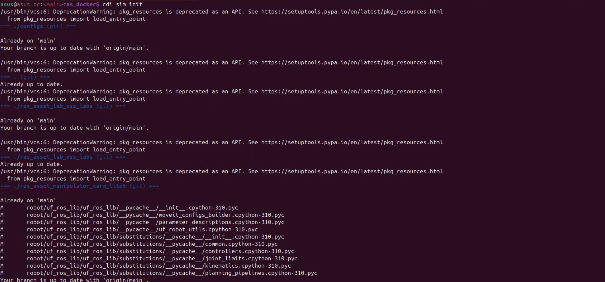
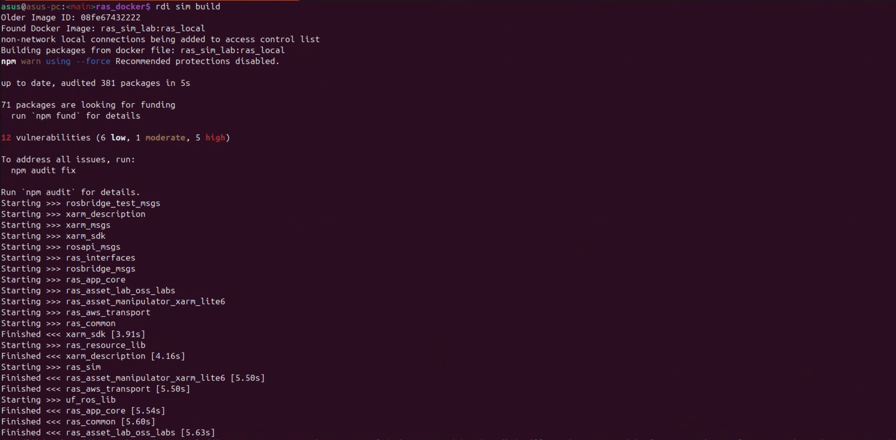

How to setup runtime development environment
This guide outlines steps for setting up the runtime development environment for RAS.
1. After the installation of RAS, initialize the sim application by running the following command:
rdi sim init

2. Build the Docker image for the sim application by running the following command:
rdi sim build

3. Start the dev environment by running the following command:
rdi sim dev
Using this command, the bash of the container will be opened. You can now interact with the container.